<div class="page-child">
    <div class="wrapper">
        <div class="decor-left decor"></div>
        <div class="page-child__title title">Света Фирстова, 12 лет</div>
        <div class="page-child__colums">
            <div class="page-child__colum">
                <div class="page-child__pic">
                    
                </div>
                <div class="page-child__diagnosis">
                    <p>Диагноз:</p>
                    <div class="page-child page-child--black">острый миелобластный лейкоз</div>
                </div>
                <div class="page-child__money">
                    <p>Нужная сумма:</p>
                    <div class="page-child page-child--blue">150 000 руб</div>
                </div>
                <div class="leica">
                    <div class="leica__container">
                        <div class="leica__name">Света Фирстова</div>
                        <div class="leica__progressbar"></div>
                        <div class="leica__collected">Собрано 6 727 из 150 000 руб.</div>
                        <div class="leica__btn btn-orange"><a href="#">Поддержать</a></div>
                        <div class="leica__text-pay">Уважаемые благотворители, система CloudPayments, через которую
                            поступают пожертвования, снимает за перевод 3,9%. Все излишки пожертвованной суммы будут
                            закреплены исключительно за данным ребенком. Они будут использованы для следующих расходов
                            на
                            него.</div>
                        <div class="leica__link">Работает на<span> Лейки </span></div>
                    </div>
                </div>
                <div class="thanks">
                    <div class="thanks__container">
                        <div class="thanks__text">
                            <p>Мы рады помощи каждого и размещаем отчетность обо всех потраченных средствах. Отчетность
                                обновляется раз в неделю.</p>
                        </div>
                    </div>
                </div>
            </div>
            <!--табы-->
            <div class="tabs">
                <div class="tabs__container">
                    <ul class="tabs__nav">
                        <li class="tabs__link"><a href="#tab-1">О ребенке</a></li>
                        <li class="tabs__link"><a href="#tab-2">Актуальная помощь</a></li>
                        <li class="tabs__link"><a href="#tab-3">Отчет</a></li>
                        <li class="tabs__link"><a href="#tab-4">Новости</a></li>
                    </ul>
                    <div class="tabs__items">
                        <div class="tabs__item" id="tab-1">
                            <div class="tabs__name"><strong>О Свете</strong></div>
                            <br>
                            Свете Фирстовой 12 лет. Она родилась совершенно здоровой, как говорят, «кровь с молоком»:
                            планово, в срок, с весом в 4 кг, и все 12 лет своей жизни радовала родителей и всех родных
                            отменным здоровьем и жизнерадостным нравом. Света даже в садике не болела наравне со всеми
                            детьми, обычная детская болезнь коллективов – ветрянка, поразила девочку только накануне
                            двенадцатого дня рождения.
                            <br>
                            <br>
                            Течение болезни было очень тяжелым: высокая температура на протяжении нескольких дней,
                            присоединившийся отит и гайморит выбили семью из колеи – до этого Света не пугала родителей
                            такими диагнозами, сейчас же даже самые дорогие жаропонижающие и антибиотики плохо
                            действовали, а Света тем временем слабела. Мама Наталия сразу забила тревогу, и в жизни
                            семьи Фирстовых началась череда походов по врачам и прохождения обследований. Первая же
                            пункция костного мозга подтвердила, что это не простая ветрянка: 82% бластных клеток,
                            бластная трансформация костного мозга. Диагноз для родителей, которые до последнего
                            надеялись, что это просто осложнения болезни, прозвучал до звона в ушах страшно: острый
                            миелобластный лейкоз, М3 – иммунологический вариант, низкая степень риска. Последняя часть
                            предложения сначала потерялась из внимания, ведь это лейкоз! Паника, страх, оцепенение. Уже
                            позже врачи пояснили Наталии, что у Светы высокие шансы быстро войти в ремиссию и побороть
                            недуг, нужно только выполнять все предписания и регулярно проходить обследования.
                            <br>
                            <br>
                            Семья Фирстовых проживает в Балтийске, поэтому Света очень любит море, прогулки, своих
                            друзей, которых у девочки очень много. Несмотря на то, что сейчас она оторвана от школы и
                            одноклассников, Света хорошо учится, при этом находя время для своего хобби: рисования.
                            Обнявшись с любимой кошкой, она может часами создавать на бумаге волшебные миры из своих
                            фантазий. Так же девочка очень любит животных. Чувство сострадания к тем, кто слабее, Свете
                            и ее старшей сестре Ане привили родители. Кто мог знать, что в скором времени помощь
                            придется просить им самим? В семье на данный момент работает только папа, мама вынуждена
                            днем и ночью быть со Светой, разрываясь между домом и Детской областной больницей.
                            <br>
                            <br>
                            Сейчас девочка находится в состоянии ремиссии. Она все такая же улыбчивая и жизнерадостная,
                            со стороны можно подумать, что эта та же маленькая крепкая розовощекая малышка, та же кровь
                            с молоком. Мы надеемся, что так оно и будет в дальнейшем — Света с родителями навсегда
                            перевернут страницу своей жизни, в которой была болезнь, и забудут о ней, как о страшном
                            сне. Но для этого семье очень нужна ваша помощь.
                            <br>
                            <br>
                            Потребность семьи Фирстовых: помощь в оплате билетов и лабораторных исследований в Москве.
                            Каждые 3 месяца необходимо проводить пункцию Светиного костного мозга и для расшифровки
                            анализа доставлять самолетом в Москву, в Национальный медицинский исследовательский центр
                            детской гематологии, онкологии и иммунологии имени Дмитрия Рогачева. К сожалению, такой
                            анализ как пункция костного мозга необходимо доставлять исключительно самолетом сразу же
                            после забора материала.
                            <br>
                            <br>
                            Давайте вместе подарим одной улыбчивой девочке из маленького приморского городка чудо –
                            здоровое и счастливое детство!end.
                        </div>
                        <div class="tabs__item" id="tab-2">
                            <strong>Текст вкладки №2</strong> Morbi tincidunt, dui sit amet facilisis feugiat,
                            odio metus gravida ante, ut pharetra massa metus id nunc. Duis scelerisque molestie
                            turpis. Sed fringilla, massa eget luctus malesuada, metus eros molestie lectus, ut
                            tempus eros massa ut dolor. Aenean aliquet fringilla sem. Suspendisse sed ligula in.
                        </div>
                        <div class="tabs__item" id="tab-3">
                            <strong>Текст вкладки №3</strong> Mauris eleifend est et turpis. Duis id erat. Susp
                            potenti. Aliquam vulputate, pede vel vehicula accumsan, mi neque rutrum erat, eu
                            congue orci lorem eget lorem. Vestibulum non ante. Class aptent taciti sociosqu ad
                            litora torquent per conubia nostra, per inceptos himenaeos. Fusce sodales.
                        </div>
                        <div class="tabs__item" id="tab-4">
                            <strong>Текст вкладки №4</strong> Mauris eleifend est et turpis. Duis id erat. Susp
                            potenti. Aliquam vulputate, pede vel vehicula accumsan, mi neque rutrum erat, eu
                            congue orci lorem eget lorem. Vestibulum non ante. Class aptent taciti sociosqu ad
                            litora torquent per conubia nostra, per inceptos himenaeos. Fusce sodales.
                        </div>
                    </div>
                </div>
            </div>
        </div>
    </div>
</div>